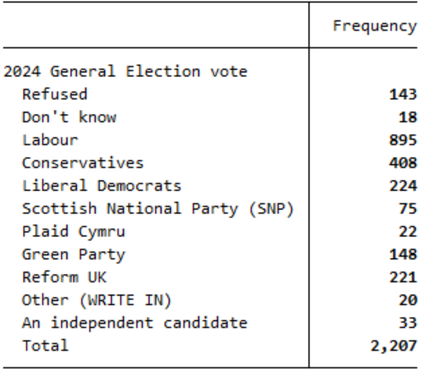
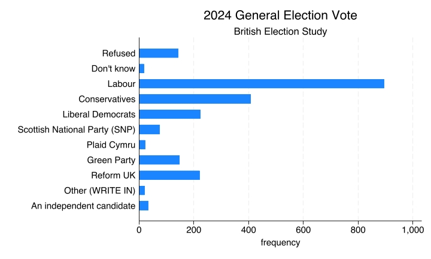
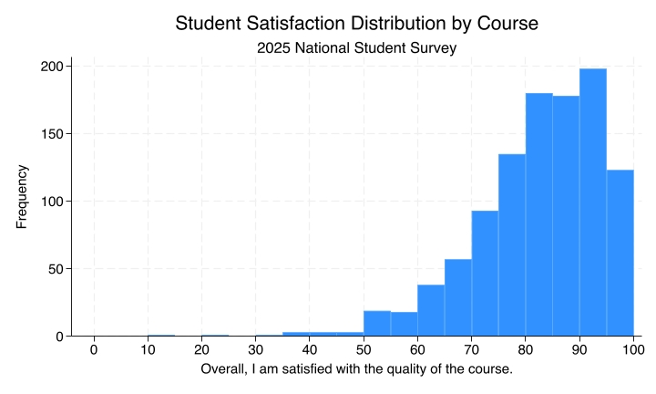
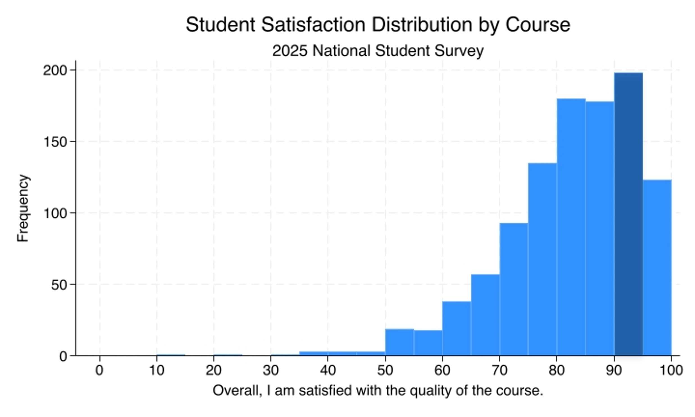
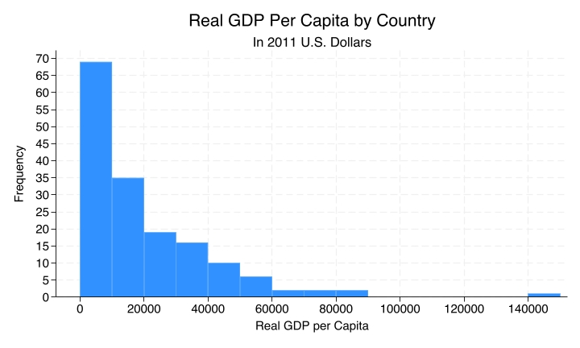
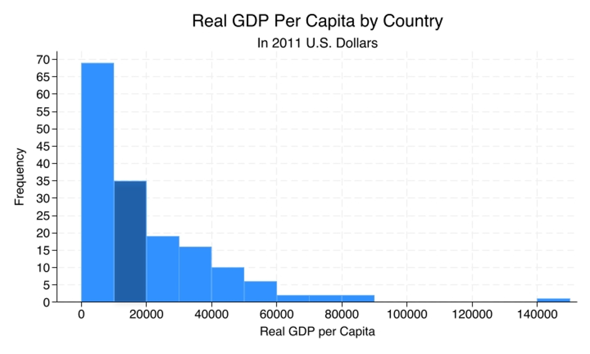

Bar Charts and Histograms
You’ll learn to
- Choose and interpret bar charts and histograms for univariate data.
General Election vote: Frequency table
Which party did you vote for in the general election?

General Election vote: Frequency bar chart

Frequency bar charts
- Good for visualising distributions of nominal variables.
- Shows how many observations are in each category.
- The order of the bars does not make a difference.
NSS Data: Summary
Q28: Overall, I am satisfied with the quality of the course
| Q28 | |
|---|---|
| Obs | 1,051 |
| Mean | 82.3 |
| Std. dev. | 12 |
| Min | 11.8 |
| Max | 100 |
NSS Data: Histogram

NSS Data: Histogram

About 200 courses between 90% and 95% satisfaction rates.
Histograms
- Good for visualising distributions of ordinal, interval, and ratio variables.
- Shows how many observations are in each range of values.
- The order of the bars does make a difference.
Another variable: GDP per capita
| Country | GDP per capita |
|---|---|
| USA | $58.4k |
| UK | $38.4k |
| China | $19.2k |
| Brazil | $14.6k |
| India | $7.7k |
| Ethiopia | $2.3k |
GDP per capita: summary
| GDPpc | |
|---|---|
| Obs | 162 |
| Mean | 19,619 |
| Std. dev. | 20,986 |
| Min | 596 |
| Max | 149,171 |
GDP per capita: Histogram

GDP per capita: Histogram

35 countries between $10k and $20k.
Recap
- Bar charts and histograms visualise distributions.
- Bar charts are used for nominal variables and show counts by category.
- Histograms are used for ordinal, interval, and ratio variables and show counts within ranges of values.
Why this matters:
- The wrong type of graph can obscure patterns or suggest structure that is not there.
- The right visualisation helps us see what is typical, what is rare, and how values are distributed.